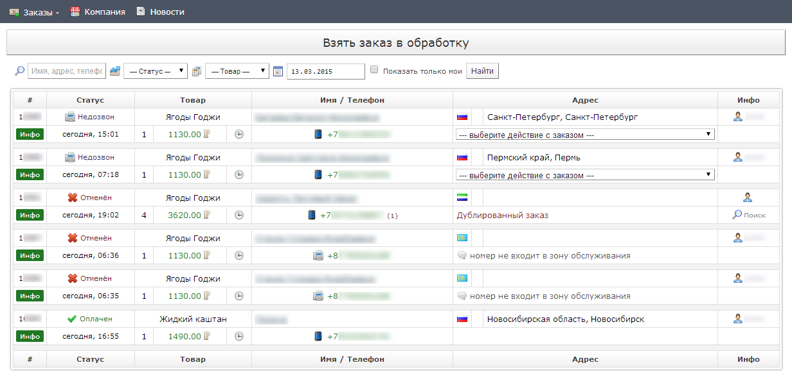
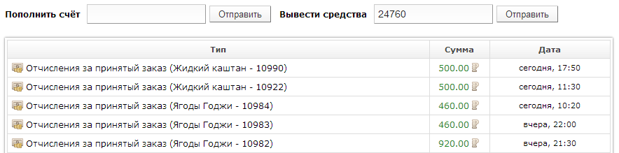
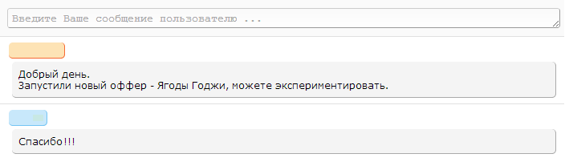
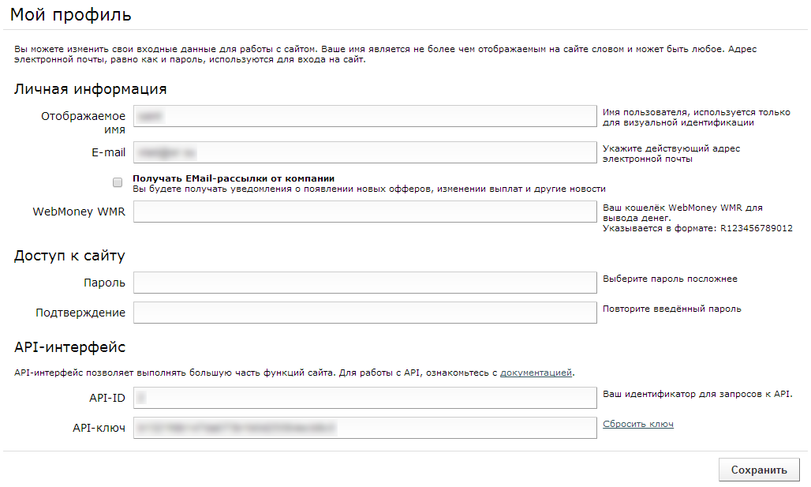

MyCPA - платформа автоматизации торговли
Мы предлагаем качественный сервис для привлечения клиентов и осуществления сделок купли-продажи товаров через интернет.
Веб-мастерам и специалистам, занимающимся привлечением покупателей и клиентов, мы предлагаем принять участие в нашей партнёрской программе. К Вашим услугам: стабильные выплаты, продвинутая аналитика, только качественные офферы от наших партнёров. Партнёрская программа работает по модели CPS («cost per sale» - оплата за продажу), Вы получаете партнёрское вознаграждение за каждый принятый нашими продавцами-участниками заказ.

Поставщикам наш проект помогает в поиске потенциальных покупателей. Мы предлагаем готовое решение для торгового бизнеса: привлечение клиентов и удобный интерфейс работы с покупателями, заказами и товарами. К вашим услугам SMS-информирование покупателей, отслеживание доставки товаров, неограниченное количество работающих менеджеров, инструменты аналитики. Вы можете связаться с нами: info@work.cpa
Интерфейс вебмастера
Подготовка потоков трафика и его анализ осуществляются с помощью интерфейса вебмастера. Чтобы начать лить трафик, необходимо выполнить несколько простых действий:
- В разделе «Офферы» подобрать понравившийся оффер для работы.
- С помощью кнопки «Создать поток по офферу» добавить новый поток для данного оффера. Имя потока может быть выбрано произвольно.
- В разделе «Потоки» нажать кнопку «Сгенерировать ссылку потока» соответствующего оффера или кнопку «Ссылка» требуемого потока для открытия формы генерации ссылки.
- В открывшейся форме выбрать понравившийся лендинг и, при необходимости, прокладку, и использовать полученную ссылку потока в своих объявлениях.
Информация о посетителях и лидах доступна в соответствующих разделах статистики. Эффективность рекламных кампаний в разбивке по объявлениям и площадкам может быть изучена с помощью инструмента «Источники трафика».
Если вас не устраивают функциональные возможности интерфейса, можно обратиться в техническую поддержку с пожеланиями по его доработке. Вы даже можете сделать свой собственный интерфейс с азартными играми и распутными женщинами, воспользовавшись нашими API.
Офферы
В данном разделе вы можете ознакомиться со списком доступных офферов. О каждом оффере доступна следующая информация: цена на лэндинге, отчисления, регион работы, конверсия и EPC за последнюю неделю, статистика по полу покупателей за всё время работы оффера. Чтобы начать работу с оффером, нужно создать по нему хотя бы один поток.
Подробная информация об оффере доступна на его отдельной странице: список доступных лэндингов и прокладок, их адреса, эффективность и данные о конверсии.
Потоки
Работа по офферами осуществляется с помощью потоков. Вы можете создавать неограниченное количество потоков по каждому офферу. Статистика по каждому из потоков и офферов формируется отдельно. Для начала работы необходимо иметь хотя бы один поток. Чтобы создать поток, необходимо выбрать интересующий вас оффер. Для этого перейдите в раздел "Офферы" основного меню.
В списке офферов вы сможете подобрать подходящие вам предложения. Чтобы просмотреть подробную информацию об оффере, ознакомиться с имеющимися рекламными материалами, лэндингами, прокладками и другой дополнительной информацией об оффере, кликните по его названию или картинке. Для создания потока нажмите на кнопку "Создать новый поток" соответствующего оффера.

При создании потока вам будет предложено указать его название для удобства анализа. По окончании создания потока вы сможете сгенерировать ссылку для трафика. Нажмите на кнопку «Сгенерировать ссылку потока» соответствующего оффера или кнопку «Ссылка» требуемого потока для открытия формы генерации ссылки.
В открывшейся форме выберите интересующий вас поток, укажите лендинг и, при необходимости, прокладку. Ссылка потока появится автоматически. Под полем со ссылкой будет показана её предполагаемая эффективность. Вы можете увеличить конверсию на прокладке, если включите ComeBacker-скрипт. Некоторые рекламные сети отсекают параметры перехода, заданные неявно, или перемещают их по ссылке. Если ваша ссылка "повреждается" рекламной сетью, вы можете принудительно указать параметр flow в ссылке. Ссылка для потока может быть сгенерирована как на основном редирект-домене to.work.cpa, так и на любом другом домене, припаркованном к нашему сервису. При необходимости, Вы можете добавить ссылку для трафбека. Любой трафик, для которого по указанному офферу нет гео-предложений, будет перенаправлен на указанный адрес. Для каждого потока автоматически сохраняются параметры лендинга, прокладки, трафбека, использования ComeBacker-скрипта и явного задания параметра перехода. Настройки цели и редирект-домена генерируются для каждой ссылки потока отдельно и могут ыть заданы независимо от потока.
Вы можете создавать любое количество потоков по офферу и использовать их для анализа трафика на своё усмотрение.
Статистика по датам
Количество кликов на лэндингах и прокладках и их эффективность вы можете просматривать в разделе статистики по датам. Информация о кликах и заказах обновляется в реальном времени. Если кликнуть по количеству заказов, вы перейдёте к статистике по лидам соответствующей даты и статуса.
С 0:00 до 0:05 по московскому времени возможны задержки и неточности в показе статистики по техническим причинам.
Статистика по лидам
В этом разделе отображается список привлечённых вами лидов. Вы можете определить точный источник поступления вашего заказа, включая прокладку, лэндинг, объявление и рекламную площадку, откуда он был получен. Информация о количестве звонков носит справочный характер и не является точной, т.к. менеджеры call-центров не всегда отмечают повторный звонок по лиду в статусе «Недозвон» или «Перезвонить».
По некоторым лидам возможны отставания в обновлении статуса заказа до 10 минут. Для некоторых лидов не отображается количество звонков и причина отказа из-за технических особенностей интерфейса поставщика данного товара.
Важно: мы не можем предоставить вам какую-либо дополнительную информацию о заказе (ФИО, адрес, телефон) кроме той, что представлена в данном разделе. Это объясняется политикой конфиденциальности нашей компании.
Статистика по источникам
Данный инструмент поможет выявить неудачные тизеры и составить чёрные списки рекламных площадок. Статистика предоставляется за 30 дней. Жёлтым помечаются источники перехода, с которых было заказано менее 1 товара на 100 кликов, красным - менее 1 товара на 1000 кликов, серым - объекты в чёрном списке.

Для корректной работы статистики по источникам необходимо настроить ваши рекламные кампании и аккаунты в соответствующих рекламных сетях:
- MarketGid: для статистики по баннерам в настройках каждой кампании включите опцию "Метки", активируйте "UTM-размерка" и укажите в качестве
utm_sourceзначениеmarketgid(остальные параметры - любые кроме пустых), для статистики по сайтам активируйте "UTM разметка пользователя" и укажите в этом полеmgd_src={widget_id}. - DirectAdvert: в настройках аккаунта включите UTM-метки (здесь).
- Advertlink: для каждой кампании необходимо зайти в "Редактирование кампании" и установить галочку "Подставлять utm метки"
- RedTram: для каждого проекта необходимо включить параметр "Использовать URL-суффикс" и указать суффикс:
utm_source={SITE_NAME}&utm_content={GOOD_ID}&utm_campaign=redtram - Target.Mail.Ru: используйте стандартные UTM-метки
- Свои SubID и SubCmp: в любой ссылке Вы можете использовать свои параметры
subidиsubcmp(положительное целое число), например:http://my-landing.net/?flow=123&subid=112233&subсmp=432
Если в этом списке нет вашей любимой рекламной сети, не отчаивайтесь! Напишите в техподдержку и мы добавим её!
Чёрные списки
Вы можете добавлять баннеры и площадки из раздела «Статистика по источникам» в чёрные списки. Эти списки в данный момент носят справочный характер и используются для удобства работы со статистикой по источникам и простой пометки баннеров и площадок, работа по которым приостановлена.
Списки могут быть скачаны в виде простого текстового файла с разбивкой или фильтром по рекламным сетям. Передайте чёрный список площадок MarketGid своему персональному менеджеру для установки.
Интерфейс поставщика
С помощью интерфейса поставщика вы можете обрабатывать все поступающие заказы. Обработкой заказов может заниматься неограниченное количество менеджеров вашей компании. К вашим услугам удобный интерфейс работы с заказами, встроенные инструменты работы со службами доставки, складской учёт, мониторинг состояния заказов, анализ работы менеджеров и многие другие функции, необходимые для успешной работы в сфере продаж.
Функционал системы может быть легко расширен по вашим запросам. Технические специалисты нашей компании реализуют любые необходимые вам для работы инструменты.

При необходимости, обработка заказов может производиться не в нашей системе, а в удобном вам интерфейсе. Трансфер заказов автоматически осуществляется с помощь API системы или вашего интерфейса. Чтобы узнать подробнее об этом интерфейсе и начать работать с нами в качестве поставщика, пожалуйста, свяжитесь с нами по почте info@work.cpa.
Общие функции
Эти разделы интерфейса доступны как вебмастерам, так и поставщикам. Они отвечают за базовую функциональность системы, такую как техническая поддержка, финансовые операции, доступ на сайт.
Финансы и выплаты
Данные обо всех совершенных финансовых операциях, а также опции по вводу и выводу средств из системы, находятся в разделе «Финансы». Перед осуществлением расходных операций Вам необходимо пополнить счёт. В случае положительного баланса на счету Вы можете вывести средства. Для этого подайте заявку на вывод средств. Все расчёты производятся в WebMoney WMR. Перед отправкой заявки на вывод средств, проверьте кошелёк для вывода в разделе «Профиль».

Зачисление средств производится мгновенно в автоматическом режиме. Заявки на вывод средств обрабатываются в среднем в течение 5-7 рабочих (банковских) дней. В случае большого числа запросов на вывод средств, этот срок может вырасти до двух недель.
Техническая поддержка
Техническая поддержка пользователей осуществляется на странице «Помощь». Служба поддержки стабильно работает по будням с 9 до 18 часов по московскому времени. В остальное время мы стараемся отвечать на Ваши запросы по мере возможности.

Прежде чем задать вопрос в техническую поддержку, рекомендуется посмотреть данное руководство и ознакомиться с FAQ. Если там не нашлось нужного ответа, или он вас не устроил, или вам просто нравится общаться с живыми людьми - служба технической поддержки к вашим услугам!
Профиль пользователя
На странице своего профиля вы можете настроить входные данные для работы с сайтом. Отображаемое имя используется только для общения с технической поддержкой. Адрес электронной почты используется для входа на сайт, восстановления пароля и получения уведомлений и новостей сервиса.

Данные, необходимые для работы с API также находятся на этой странице. В целях безопасности API-ключ может быть в любой момент сгенерирован заново. Информацию о работе с API вы можете найти в соответствующем разделе помощи.